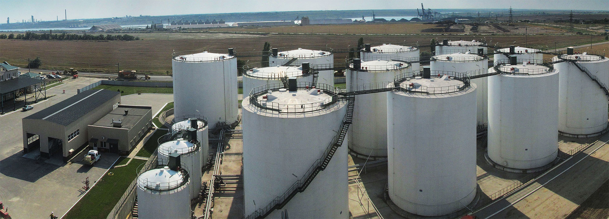

Інноваційність, оперативність, сертифікація — переваги перевалки рослинних олій на пункті перевалки SFT

ПЕРЕВАЛКА РОСЛИННИХ ОЛІЙ
Виробничі потужності нового перевалочного пункту дозволяють якісно перевалювати до 400 000 мт. рослинних олій щороку. Велика територія, продумана схема руху авто, залізничного транспорту, сучасні під'їзні шляхи, можливість відразу загнати 8 залізничних цистерн — ось виробничі можливості пункту SFT.
Компанія SFT пропонує індивідуальний підхід до кожного зернотрейдера, виробника олійно-жирової продукції, експортерів та іноземних покупців.